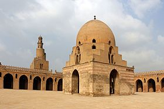
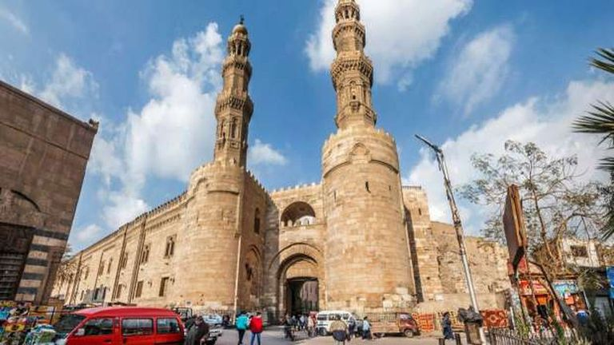
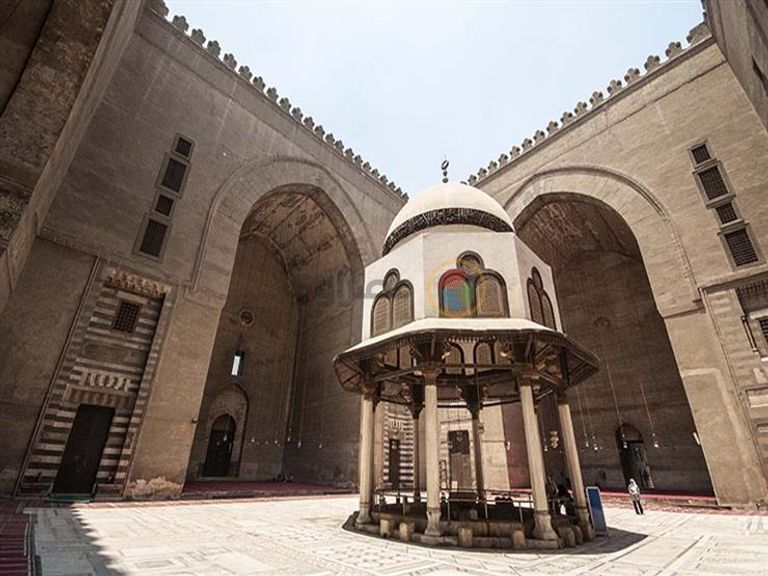
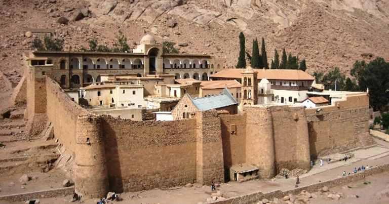
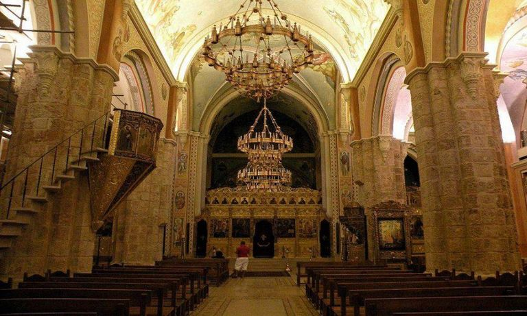
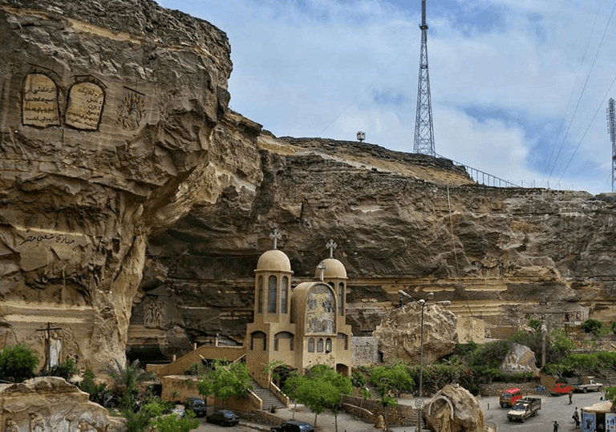
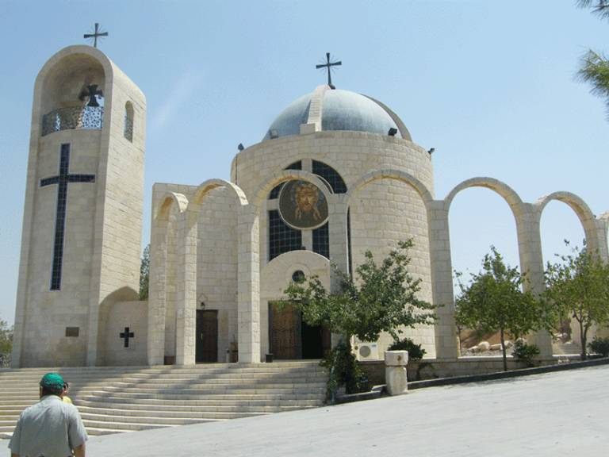
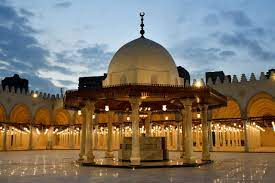
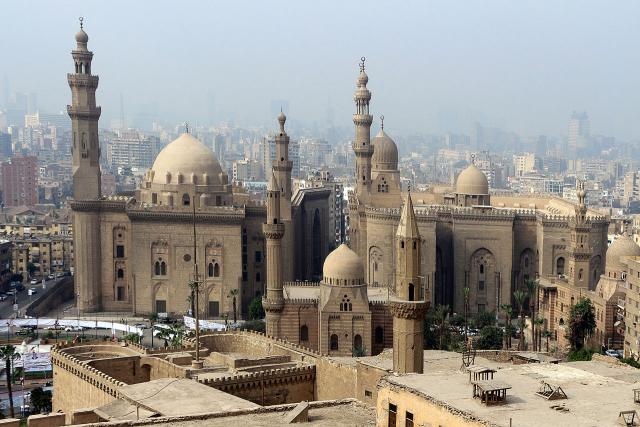
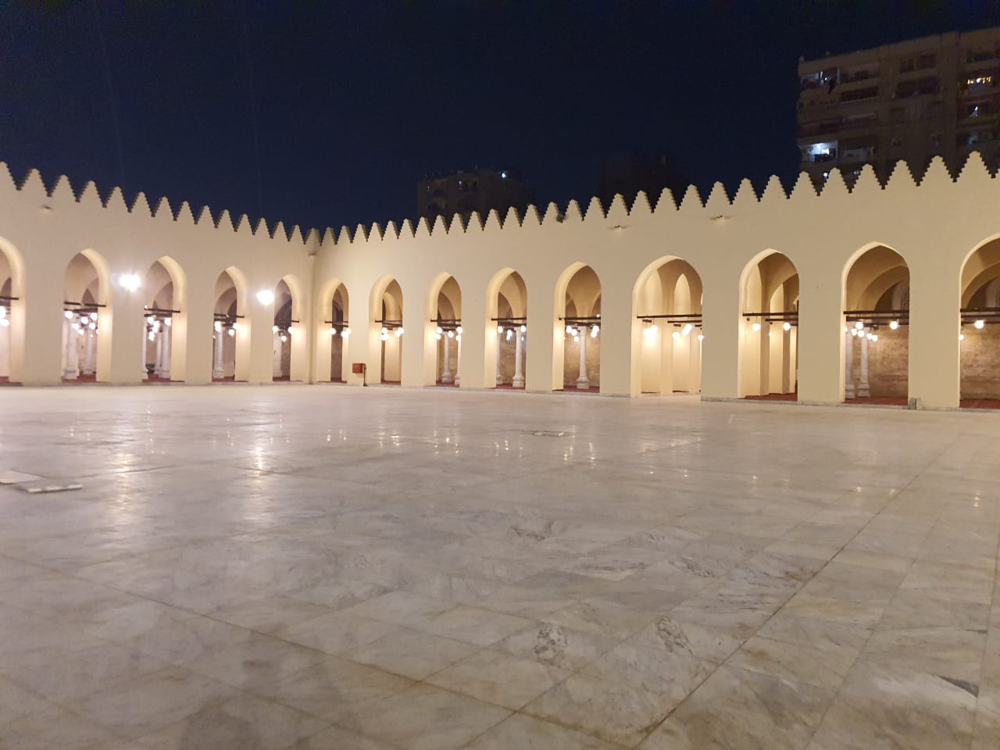

Al-Azhar Mosque is one of the most important mosques in Egypt,
especially since it has a huge status as a historical stronghold for
spreading the teachings of the Islamic religion, in addition to its
status as a famous archaeological mosque in Egypt and the Islamic
world as well. As for the history of the construction of Al-Azhar
Mosque, we find that it was built during the era of the Fatimid state
in Egypt, which was conquered by Jawhar al-Siqilli in the year 969 AD.
A number of changes took place in the mosque as a form of development
and restoration.

Muhammad Ali Mosque, Alabaster Mosque, or Alabaster Mosque is one of
the famous ancient mosques in Cairo. It was built by Muhammad Ali
Pasha between the period from 1830 AD to 1848 AD in the Ottoman style,
similar to the Sultan Ahmed Mosque in Istanbul. It is sometimes called
the Alabaster or Alabaster Mosque due to the frequent use of this type
of marble in cladding its walls. The successors of Muhammad Ali Pasha
took care of the mosque, so they completed the construction and added
some simple additions to it. They also made it a place for celebrating
annual religious events, and they were, in order, Abbas Hilmi Pasha I,
Muhammad Saeed Pasha, Ismail Pasha, and Tawfiq Pasha. Its restoration
process.

Ibn Tulun Mosque, Ahmed Ibn Tulun Mosque, or Tulunid Mosque is one of
the famous archaeological mosques in Cairo. It was ordered to be built
by Ahmad ibn Tulun, the founder of the Tulunid state, in the year 263
AH/877 AD in his new city of Al-Qata’i, to become the third mosque
mosque built in the Islamic capital of Egypt after the Amr ibn Al-Aas
Mosque, which was built in Fustat, and the Al-Askar Mosque, which was
built in the city of Al-Askar, although the Amr ibn Al-Aas Mosque
still exists. However, the Tulunid Mosque is considered the oldest
existing mosque in Egypt to date because it has preserved its original
state compared to the Amr Ibn Al-Aas Mosque, which underwent several
repairs that changed its features.

Built in 485 AH/1092 AD, Bab Zuweila was an execution site during the
Mamluk era, and is now the only remaining southern gate of the
medieval city of Cairo. There are many interesting exhibits about the
history of the gate with careful explanations in English, and from
inside the gate you can enjoy watching the panoramic views that extend
to the famous castle there.

If the pyramids are the most awe-inspiring feature of ancient Egypt,
then the Sultan Hassan Mosque is Egypt's Islamic school and the most
famous monument in the Islamic world. The Sultan Hassan School or
Mosque, this giant edifice, was founded by Sultan Hassan, son of the
great Mamluk Sultan Al-Nasir Muhammad bin Qalawun, in 1361 AD, and
work on it continued for 4 years. Sultan Hassan died before the work
on it was completed. Restorations were made to the mosque in 1915 AD
under the supervision of engineer Hertz Pasha, and the Egyptian
Antiquities Authority recently renewed the dome of the mosque.

Egypt has witnessed the growth of the Christian religion and therefore
has some of the most important places representing the Christian
religion, including the Monastery of St. Catherine and many Orthodox,
Protestant, and Catholic monasteries and churches. St. Catherine's
Monastery was built in 565 AD to accommodate monks who were settlers
in the Sinai Peninsula. The monastery is located on Mount Catherine in
Sinai. One of the things that generates more tourist and historical
interest inside it is the presence of a library that includes the
largest collection of books, about 3,500 books in different languages.

It is a Greek Orthodox church located in the Babylon Citadel in Old
Cairo, and it belongs to the Patriarchal Monastery of St. George of
the Greek and Orthodox Patriarchates of Alexandria and the rest of
Africa. The church was built in the tenth century AD, and the current
structure was rebuilt after the church fire in 1904 AD and completed
in 1909 AD.

The Monastery of Saint Simeon is located on the right bank of the Nile
in Aswan. It was built in 700 AD and is still in good condition even
though it is located in an abandoned place. There you can now discover
and enjoy the Coptic murals after their renovation and spend an
enjoyable time in worship. The only weak point of this monastery was
its accessibility and lack of water and in fact this was the reason
why the monastery was abandoned.

The Monastery of Saint Paul is one of the most important religious
tourist places in Egypt, and its construction dates back to the fourth
century AD. A visit is worthwhile because it gives you a glimpse into
the still life, prayer and asceticism that flourished there in the
eastern desert nearly 2,000 years ago. You can wander freely around
the monastery, provided that you are accompanied by a guide with an
English-speaking monk who will allow you to access many of the closed
areas of the monastery.

Amr ibn al-Aas Mosque or (Al-Fath Mosque, Old Mosque, Crown of
Mosques) is one of the historical mosques of Cairo. It was established
during the era of Amr ibn al-Aas’ rule of Egypt in the city of Fustat,
which was founded by Muslims as the first Islamic capital. The area of
the mosque at the time of its construction was 50 cubits by 30
cubits and had six doors. It remained that way until the year 53 AH /
672 AD, when expansions continued. Maslama bin Mukhlid Al-Ansari,
governor of Egypt by Muawiyah bin Abi Sufyan, increased its area and
built four minarets in it. Repairs and expansions continued after
that. The hand of those who ruled Egypt until its area, after
continuous expansion operations, reached about twenty-four thousand
architectural cubits. It is now 120 by 110 metres.

Al-Rifai Mosque is one of the famous ancient mosques in Cairo.
Khushiar Hanim, mother of Khedive Ismail, ordered its construction in
the year 1286 AH/1869 AD, and assigned Hussein Pasha Fahmi to
implement the project. In the year 1298 AH / 1880 AD, the construction
of the mosque was stopped, then Khushiar Hanim died in the year 1303
AH / 1885 AD, and the construction project remained suspended for
about 25 years until the reign of Khedive Abbas Hilmi II in the year
1905 to Ahmed Khairy Pasha to complete the mosque, so he commissioned
the engineer Herz Pasha to complete the construction, and he completed
it in the year 1329 AH. / 1911 AD, and the mosque was opened for
prayer at the beginning of the month of Muharram in the year 1330 AH /
1912 AD. The mosque contains the tombs of Sheikh Ali Abi Shabak and
Yahya Al-Ansari, as well as the tombs of the royal family in which
Khedive Ismail and his mother, Khushiar Hanim, the founder of the
mosque, and his wives and children, Sultan Hussein Kamel and his wife,
King Fouad I, and King Farouk I, rest.

King Al-Zahir Baibars began establishing this mosque in the year 665
AH in the square where he used to play ball, and he completed it in
the year 667 AH, and made the rest of the square a waqf for the
mosque. When the French came to Egypt, they installed cannons in it
and made it a castle. Then it was transformed in the era of Muhammad
Ali into a camp for the Senegalese Takarna sect, then into a soap
factory, and finally it was transformed into an altar during the era
of the English occupation. In the year 1893, the Committee for the
Preservation of Arab Antiquities took care of repairing the mosque and
trying to return it to its original state. His original mission. On
June 4, 2023, the Egyptian Ministry of Endowments opened the mosque
after its restoration and maintenance.